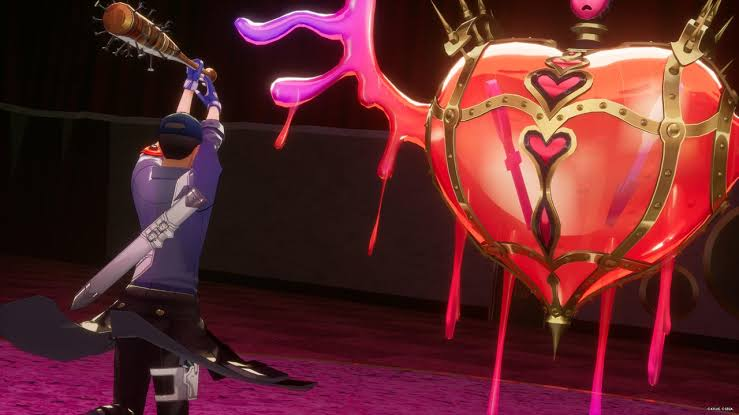

<!DOCTYPE html>
<html lang="pt-BR">
</html>
<head>
    <meta charset="UTF=8">
    <meta name viewport content = width = device-width initial-scale-1.0>
</head>

<title> Um guia para o maravilhoso jogo que é PERSONA 3</title>
<html>
    <h1>Introdução ao jogo.</h1>
    <p> </p>
    <p>Persona 3 ou Shin Megami Tensei: Persona 3, é o terceiro jogo da franquia que é um spin-off da franquia Megami Tensei, desenvolvido pela ATLUS e distribuido pela mesma por grnade parte do mundo, exceto em algumas partes da europa onde é distribuido pela Ghostlight... O jogo roda em torno do protagonista que teve seu nome dado a partir dos filmes do jogo, sendo ele Makoto Yuki, no caso é o mais aceito pela comunidade de persona como um todo, a temática do jogo é um tópico sensível, sendo ele, a morte e a aceitação da mortalidade humana, em diversas músicas da OST do jogo, é possível perceber que existem duas frases em latim que são bem famosas, sendo elas "Memento Mori, Memento Vivere" e "Carpe Diem" as duas possuem um significado que se completa, "aceite sua mortalidade, viva a vida em seu máximo", esse é o principal lema do primeiro episódio do jogo, "A Jornada".</p>
    <p> </p>
    
    <h2>Da cutscene inicial ao segundo chefão da lua cheia. (11/04 a 07/07)</h2>
    <p> </p>
</html>